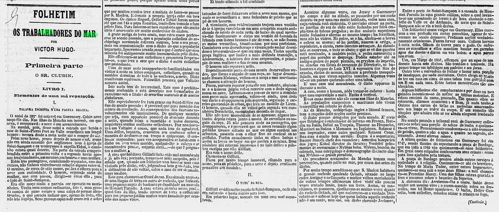

%%{init: { 'logLevel': 'debug', 'theme': 'base', 'timeline': }}%%
timeline
title Brasil Colônia
1500 : Invasão dos portugueses
: Catequisação dos indígenas
1600 : Barroco : Gregório de Matos
1700
: (1760 – 1840) Revolução Industrial
: (1768-1836) Arcadismo brasileiro
: (1774) Os sofrimentos do jovem Werther
: (1776) Independência dos EUA
: (1789 e 1799) Revolução Francesa
: (1789) Inconfidência Mineira
1800
: (1808) Chegada da Família Real
: (1822) Independência do Brasil
: (1836-1881) Romantismo brasileiro
: (1881-1893/1902) Realismo brasileiro
1900 : (1902) Pré-Modernismo
üì∫ Romantismo: Prosa
Literatura
Romantismo: Prosa
Cronologia
Como nasce o sentimento nacionalista?
Grécia

Japão
Portugal
Europa
Brasil?
Imagine-se no Brasil de 1850… Qual é o herói nacional de quem você descende?
Contexto Cultural

A publicação de folhetins diários fez sucesso no Brasil. Tal estratégia aumentou de forma expressiva a tiragem dos periódicos, com uma nova narrativa, envolvente, de linguagem acessível, sem complicações intelectuais, de acontecimentos rápidos e de emoções fortes.
A estrutura folhetinescaapresentava conflitos que provocavam a desordem e estabeleciam a crise nos valores burgueses; contudo, a s dificuldades eram superadas e a felicidade era restabelecida com a reordenação da ordem burguesa, reafirmando-se os seus valores.
O público leitor desses folhetinse era tipicamente urbano, apesar das raízes rurais: mulheres e estudantes que se estabeleceram na corte após a Independência em busca de ascensão econômica ou política ou filhos de senhores rurais que vinham completar os estudos.
Os folhetins folhetins modernizam uma sociedade incomodada com ideias intolerantes que refletiam a visão agrária e atrasada destoando dos valores urbanos apregoados pela burguesia. A literatura brasileira abandona as cópias e versões, inaugurando a era do romance nacional.
Características da prosa romaântica
- Tipos: urbana, regional, indianista e histórica;
- Idealização;
- Sentimentalismo;
- Índio como herói;
- Idealização da nação;
- Passado histórico glorioso;
- Interesses da elite;
- Adequação ao novo público leitor;
- Enredos simples e repetitivos;
- Uso de adjetivações;
- Linguagem “brasileira”.
Romance Urbano
- Ambientada nas cidades;
Romance Indianista
- (que também é histórico) — tem como protagonista o índio — focalizado também, como na poesia.
Romance Regionalista
- Necessidade de valorizar culturalmente todo os espaços do Brasil.
Romance Histórico
- Incorpora figuras históricas ou até lendárias, situando-as em seus tempo e espaço reais.
Joaquim Manoel de Macedo
Joaquim Manuel de Macedo (Itaboraí, 24 de junho de 1820 — Itaboraí, 11 de abril de 1882) foi um médico, jornalista, escritor, professor, romancista, poeta, literato, teatrólogo, memorialista e político brasileiro.
É o patrono da cadeira 20 da Academia Brasileira de Letras.1

A Moreninha
O primeiro romance brasileiro — O filho do pescador, de Teixeira e Souza — foi publicado em 1843, entretanto não conquistou muita popularidade, pois apresentava uma trama bastante confusa.
Foi com A Moreninha (1844), de Joaqum Manuel de Macedo, que surgiu o verdadeiro romance romântico brasileiro.
José de Alencar
José Martiniano de Alencar (Fortaleza, 1.º de maio de 1829 — Rio de Janeiro, 12 de dezembro de 1877) foi um jornalista, advogado, político e escritor romântico brasileiro. É considerado o principal e o mais importante escritor do romantismo no Brasil, sendo por vezes considerado o pai da literatura brasileira.2

Cronologia3
- 1840: Transfere-se com a família para o Rio de Janeiro.
- 1840: Está matriculado no Colégio de Instrução Elementar.
- 1846: Ingressa na Faculdade de Direito do Largo de São Francisco, em São Paulo.
- 1848: Transfere-se para a Faculdade de Direito de Olinda.
- 1850: Em São Paulo novamente, forma-se em Direito.
- 1854: Inicia, no Rio de Janeiro com sua colaboração no Correio Mercantil.
- 1856: Trabalha como redator-chefe no Diário do Rio de Janeiro. Publica as Cartas sobre a confederação dos Tamoios, polêmica com Gonçalves de Magalhães. Estreia na ficção com o romance Cinco minutos.
- 1857: Publica com grande repercussão O Guarani, primeiro em folhetins, depois em livro.
- 1860: Morre o pai do escritor - José Martiniano de Alencar -, que fora revolucionário e político influente.
- 1861: Elege-se deputado. Reeleito em várias legislaturas subsequentes.
- 1865: Nasce o seu filho Augusto de Alencar.
- 1868: Ministro da Justiça durante dois anos no Gabinete Conservador.
- 1870: Abandona a carreira política, magoado com o imperador dom Pedro II. De acordo com Oliveira Lima, Pedro II teria ponderado sobre o porquê de Alencar, quando Ministro da Justiça no Gabinete Itaboraí, ter demitido o chefe de polícia do Pará, “o qual, no exercício de suas funções, descobrira e denunciara ligações entre criminosos do Pará e habitantes do Ceará que eram influências eleitorais” (Oliveira Lima, 2021, p. 130).
- 1872: Nasce o seu filho Mário de Alencar.
- 1877: Vítima de tuberculose, viaja para a Europa, tentando curar-se. Morreu no Rio de Janeiro em 12 de dezembro.
Obras por tema
- Históricos: As minas de prata, Guerra dos Mascates.
- Regionalistas: Til, O sertanejo, O tronco de Ipê, O gaúcho.
- Urbanos: Senhora, Lucíola, Diva, A viuvinha, Cinco minutos, A pata da gazela.
- Indianistas: Iracema, Ubirajara e O guarani.
Trecho de Senhora
O livro está dividido em quatro partes:
- “O Preço”
- “Quitação”
- “Posse”
- “Resgate”
O trecho abaixo é o início do Capítulo I da obra.
  Há anos raiou no céu fluminense uma nova estrela.
  Desde o momento de sua ascensão ninguém lhe disputou o cetro; foi proclamada a rainha dos salões.
  Tornou-se a deusa dos bailes; a musa dos poetas e o ídolo dos noivos em disponibilidade.
  Era rica e formosa.
  Duas opulências, que se realçam como a flor em vaso de alabastro; dois esplendores que se refletem, como o raio de sol no prisma do diamante.
  Quem não se recorda da Aurélia Camargo, que atravessou o firmamento da corte como brilhante meteoro, e apagou-se de repente no meio do des- lumbramento que produzira o seu fulgor?
  Tinha ela dezoito anos quando apareceu a primeira vez na sociedade. Não a conheciam; e logo buscaram todos com avidez informações acerca da grande novidade do dia.
O trecho abaixo mostra dois episódios do romance: a cena do casamento entre Aurélia e Seixas e a cena da noite de núpcias do casal.
  Os convidados, que antes lhe admiravam a graça peregrina, essa noite a achavam deslumbrante, e compreendiam que o amor tinha colorido com as tintas de sua palheta inimitável, a já tão feiticeira beleza, envolvendo-a de irresistível fascinação.
  — Como ela é feliz! — diziam os homens.
  — E tem razão! — acrescentaram as senhoras volvendo os olhos ao noivo.
  Também a fisionomia de Seixas se iluminava com o sorriso da felicidade. O orgulho de ser o escolhido daquela encantadora mulher ainda mais lhe ornava o aspecto já de si nobre e gentil.
  Efetivamente, no marido de Aurélia podia-se apreciar essa fina flor da suprema distinção, que não se anda assoalhando nos gestos pretensiosos e nos ademanes4 artísticos; mas reverte do íntimo com uma fragrância que a modéstia busca recatar, e não obstante5 exala-se dos seios d’alma.
4 Ademanes: aceno, trejeito, qualquer gesto ou comportamento afetado.
5 Não obstante: apesar disso, contudo.
  Depois da cerimônia começaram os parabéns que é de estilo dirigir aos noivos e a seus parentes.
  […]
  Para animar a reunião as moças improvisaram quadrilhas, no intervalo das quais um insigne6 pianista, que fora mestre de Aurélia, executava os melhores trechos de óperas então em voga.
6 Insigne: destacado, famoso, ilustre.
  Por volta das dez horas despediram-se as famílias convidadas.
  […]
  Aurélia ergueu-se impetuosamente.
  — Então enganei-me? — exclamou a moça com estranho arrebatamento7. — O senhor ama-me sinceramente e não se casou comigo por interesse?
7 Arrebatamento: exaltação, arroubo, comportamento precipitado.
  Seixas demorou um instante o olhar no sem blante da moça, que estava suspensa de seus lábios, para beber-lhe as palavras:
  — Não, senhora, não enganou-se, disse afinal com o mesmo tom frio e inflexível. Vendi-me; per tenço-lhe. A senhora teve o mau gosto de comprar um marido aviltado8; aqui o tem como desejou. Podia ter feito de um caráter, talvez gasto pela educação, um homem de bem, que se enobrecesse com sua afeição; preferiu um escravo branco; estava em seu direito, pagava com seu dinheiro, e pagava generosamente. Esse escravo aqui o tem; é seu marido, porém nada mais do que seu marido!
8 Aviltado: desonrado, rebaixado, envilecido.
Manuel Antônio de Almeida
Manuel Antônio de Almeida (Rio de Janeiro, 17 de novembro de 1830 — Macaé, 28 de novembro de 1861) foi um médico, escritor e professor brasileiro. É conhecido pelo seu romance Memórias de um Sargento de Milícias, considerado uma das mais importantes obras literárias do Brasil[1].9

Memórias de um sargento de Milícias, de 1852, foi seu único livro. Retrata as classes média e baixa, algo muito incomum para a época, na qual os romances retratavam os ambientes aristocráticos. A experiência de ter tido uma infância pobre influenciou Manuel Antônio de Almeida no desenvolvimento de sua obra.
trecho de Memórias de um Sargento de Milícias
  […] Ao sair do Tejo10, estando a Maria encostada à borda do navio, o Leonardo fingiu que passava distraído por junto dela, e com o ferrado sapatão assentou-lhe uma valente pisadela no pé direito. A Maria, como se já esperasse por aquilo, sorriu-se como envergonhada do gracejo, e deu-lhe também em ar de disfarce um tremendo beliscão nas costas da mão esquerda. Era isto uma declaração em forma, segundo os usos da terra: levaram o resto do dia de namoro cerrado; ao anoitecer passou-se a mesma cena de pisadela e beliscão, com a diferença de serem desta vez um pouco mais fortes; e no dia seguinte estavam os dois amantes tão extremosos e familiares, que pareciam sê-lo de muitos anos.
10 Tejo: rio de Portugal.
  Quando saltaram em terra começou a Maria a sentir certos enojos; foram os dois morar juntos; e daí a um mês manifestaram-se claramente os efeitos da pisadela e do beliscão; sete meses depois teve a Maria um filho, formidável menino de quase três palmos de comprido, gordo e vermelho, cabeludo, esperneador e chorão; o qual, logo depois que nasceu, mamou duas horas seguidas sem largar o peito. E este nascimento é certamente de tudo o que temos dito o que mais nos interessa, porque o menino de quem falamos é o herói desta história.
  Chegou o dia de batizar-se o rapaz: foi madrinha a parteira; sobre o padrinho houve suas dúvidas: o Leonardo queria que fosse o Sr. juiz; porém teve de ceder a instâncias11 da Maria e da comadre, que queriam que fosse o barbeiro de defronte, que afinal foi adotado. Já se sabe que houve nesse dia função: os convidados do dono da casa, que eram todos dalém-mar, cantavam ao desafio, segundo seus costumes; os convidados da comadre, que eram todos da terra, dançavam o fado. O compadre trouxe a rabeca12, que é, como se sabe, o instrumento favorito da gente do ofício. A princípio, o Leonardo quis que a festa tivesse ares aristocráticos, e propôs que se dançasse o minuete13 da corte. Foi aceita a ideia, ainda que houvesse dificuldade em encontrarem-se pares. Afinal levantaram-se uma gorda e baixa matrona, mulher de um convidado; uma companheira desta, cuja figura era a mais completa antítese da sua; um colega do Leonardo, miudinho, pequenino, e com fumaças de gaiato, e o sacristão da Sé, sujeito alto, magro e com pretensões de elegante. O compadre foi quem tocou o minuete na rabeca; e o afilhadinho, deitado no colo da Maria, acompanhava cada arcada com um guincho e um esperneio. Isto fez com que o compadre perdesse muitas vezes o compasso, e fosse obrigado a recomeçar outras tantas.
11 Instância: pedido, solicitação, insistência.
12 Rabeca: nome antiquado do violino.
13 Minuete: antiga dança francesa com movimentos delicados e equilibrados.
  Depois do minuete foi desaparecendo a cerimônia, e a brincadeira aferventou, como se dizia naquele tempo. Chegaram uns rapazes de viola e machete: o Leonardo, instado pelas senhoras, decidiu-se a romper a parte lírica do divertimento. Sentou-se num tamborete, em um lugar isolado da sala, e tomou uma viola. Fazia um belo efeito cômico, vê-lo, em trajes do ofício, de casaca, calção e espadim, acompanhando com um monótono zum-zum nas cordas do instrumento o garganteado de uma modinha pátria. Foi nas saudades da terra natal que ele achou inspiração para o seu canto, e isto era natural a um bom português, que o era ele.
  […] O canto do Leonardo foi o derradeiro toque de rebate14 para esquentar-se a brincadeira, foi o adeus às cerimônias. Tudo daí em diante foi burburinho, que depressa passou à gritaria, e ainda mais depressa à algazarra. […]
14 Rebate: sinal, anúncio.
Viconde de Taunay
Alfredo Maria Adriano d’Escragnolle Taunay, primeiro e único Visconde de Taunay, (Rio de Janeiro, 22 de fevereiro de 1843 – 25 de janeiro de 1899) foi um nobre, escritor, músico, professor, engenheiro militar, político, historiador e sociólogo brasileiro.
Foi um dos fundadores da Academia Brasileira de Letras (ABL), ocupando a Cadeira n.° 13. Também é o patrono da Cadeira n.° 17 da Academia Brasileira de Música (ABM).15

Trecho de Inocência
  Estava Cirino fazendo o inventário da sua roupa e já começava a anoitecer, quando Pereira novamente a ele se chegou.
  — Doutor, disse o mineiro, pode agora mecê entrar para ver a pequena. Está com o pulso que nem um fio, mas não tem febre de qualidade nenhuma.
  — Assim é bem melhor, respondeu Cirino.
  E, arranjando precipitadamente o que havia tirado da canastra, fechou-a e pôs-se de pé.
  Antes de sair da sala, deteve Pereira o hóspede com ar de quem precisava tocar em assunto de gravidade e ao mesmo tempo de difícil explicação.
  Afinal começou meio hesitante:
  — Sr. Cirino, eu cá sou homem muito bom de gênio, muito amigo de todos, muito acomodado e que tenho o coração perto da boca, como vosmecê deve ter visto…
  — Por certo, concordou o outro.
  — Pois bem, mas… tenho um grande defeito; sou muito desconfiado. Vai o doutor entrar no interior da minha casa e… deve portar-se como…
  — Oh, Sr. Pereira! atalhou Cirino com animação, mas sem grande estranheza, pois conhecia o zelo com que os homens do sertão guardam da vista dos profanos os seus aposentos domésticos, posso gabar-me de ter sido recebido no seio de muita família honesta e sei proceder como devo.
  Expandiu-se um tanto o rosto do mineiro.
  — Vejo, disse ele com algum acanhamento, que o doutor não é nenhum pé-rapado, mas nunca é bom facilitar… E já que não há outro remédio, vou dizer-lhe todos os meus segredos… Não metem vergonha a ninguém, com o favor de Deus; mas em negócios da minha casa não gosto de bater língua… Minha filha Nocência fez 18 anos pelo Natal, e é rapariga que pela feição parece moça de cidade, muito ariscazinha de modos, mas bonita e boa deveras… Coitada, foi criada sem mãe, e aqui nestes fundões. […]
  — Ora muito que bem, continuou Pereira caindo aos poucos na habitual garrulice, quando vi a menina tomar corpo, tratei logo de casá-la.
  — Ah! é casada? perguntou Cirino.
  — Isto é, é e não é. A coisa está apalavrada. Por aqui costuma labutar no costeio do gado para São Paulo um homem de mãocheia, que talvez o Sr. conheça… o Manecão Doca…
. . . . . . . . . . . . . . . . . . . . . . . . . . . . . .
  — Esta obrigação de casar as mulheres é o diabo!… Se não tomam estado, ficam jururus e fanadinhas…; se casam podem cair nas mãos de algum marido malvado… E depois, as histórias!… Ih, meu Deus, mulheres numa casa, é coisa de meter medo… São redomas de vidro que tudo pode quebrar… Enfim, minha filha, enquanto solteira, honrou o nome de meus pais… O Manecão que se aguente, quando a tiver por sua… Com gente de saia não há que fiar… Cruz! botam famílias inteiras a perder, enquanto o demo esfrega um olho.
  Esta opinião injuriosa sobre as mulheres é, em geral, corrente nos nossos sertões e traz como consequência imediata e prática, além da rigorosa clausura em que são mantidas, não só o casamento convencionado entre parentes muito chegados para filhos de menor idade, mas sobretudo os numerosos crimes cometidos, mal se suspeita possibilidade de qualquer intriga amorosa entre pessoa da família e algum estranho.
. . . . . . . . . . . . . . . . . . . . . . . . . . . . . .
  — Sr. Pereira, replicou Cirino com calma, já lhe disse e torno-lhe a dizer que, como médico, estou há muito tempo acostumado a lidar com famílias e a respeitá-las. É este meu dever, e até hoje, graças a Deus, a minha fama é boa… Quanto às mulheres, não tenho as suas opiniões, nem as acho razoáveis nem de justiça. Entretanto, é inútil discutirmos porque sei que isso são prevenções vindas de longe, e quem torto nasce, tarde ou nunca se endireita… O Sr. falou-me com toda franqueza, e também com franqueza lhe quero responder. No meu parecer, as mulheres são tão boas como nós, se não melhores: não há, pois, motivo para tanto desconfiar delas e ter os homens em tão boa conta… enfim, essas suas ideias podem quadrar-lhe à vontade, e é costume meu antigo a ninguém contrariar, para viver bem com todos e deles merecer o tratamento que julgo ter direito a receber. Cuide cada qual de si, olhe Deus para todos nós, e ninguém queira arvorar-se em palmatória do mundo.
  Tal profissão de fé, expedida em tom dogmático e superior, pareceu impressionar agradavelmente a Pereira, que fora aplaudindo com expressivo movimento de cabeça a sensatez dos conceitos e a fluência da frase.